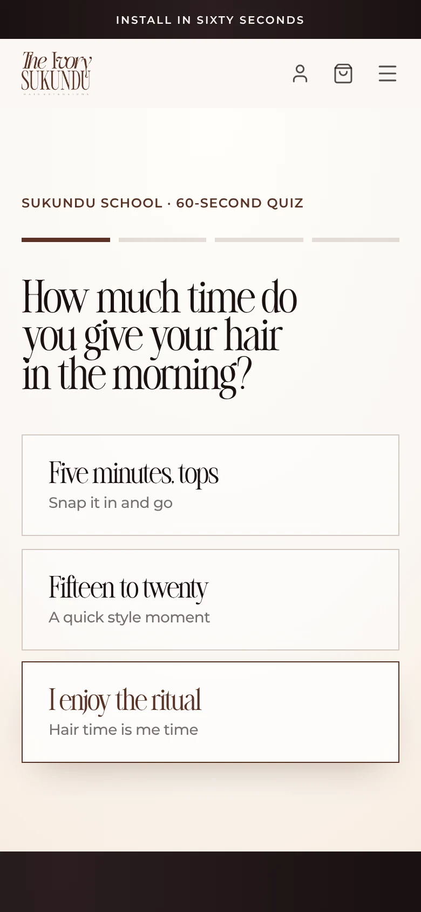

Kee · Kreeative
Étude de cas · Site web
The Ivory Sukundu : un site, du problème au lancement.
Une marque d’extensions de luxe, et une boutique qui répond aux questions des clientes.
Glisse →
Étude de cas · The Ivory Sukundu01 / 08
Étude de cas · Site web
Une marque d’extensions de luxe, et une boutique qui répond aux questions des clientes.
Glisse →
01 · Problème
Quelle longueur, combien de paquets, quelle texture. Un template de boutique classique ne répondait à rien de tout ça.
Ce que les clientes demandaient tout le temps
Jusqu’où tombent 24 pouces sur moi ?
Combien de paquets pour un look complet ?
Lisse ou bouclé, pour ma routine ?
02 · Recherche
La longueur est devenue un guide : seize longueurs de 10 à 40 pouces, où chacune tombe et combien de paquets il faut. La texture est devenue un quiz.
03 · Wireframe
Découvrir, puis choisir, puis faire partie du cercle. C’est là que le site s’est vraiment décidé.
04 · Design
Ivoire, espresso et une touche d’or, une typo éditoriale, et rien qui ressemble à un magasin de déstockage.

Le quizune question à la fois

Le Cerclela fidélité, en trois étapes
05 · Lancement
Juillet 2026
theivorysukundu.com est en ligne
Octobre 2026
La boutique quitte Shopify : son propre catalogue, panier et paiement
Novembre 2026
La propriétaire modifie son site directement, depuis son tableau de bord
06 · Résultat
Résultat
[RESULT_METRIC_OR_FEEDBACK]
Enregistre ce post ↓
kreeative.xyz